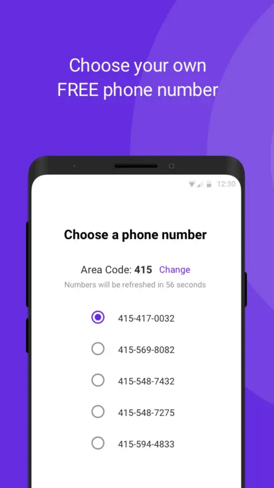
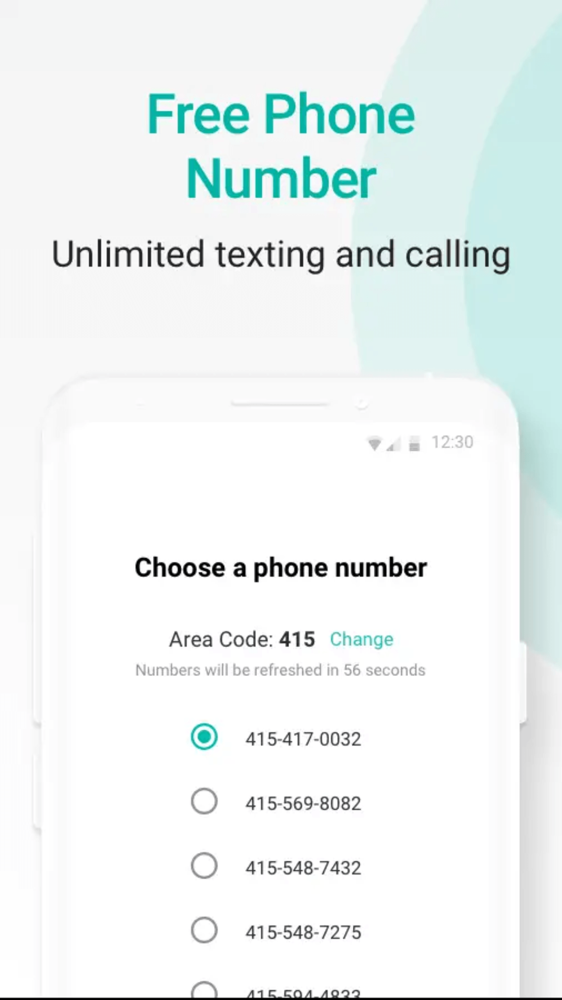
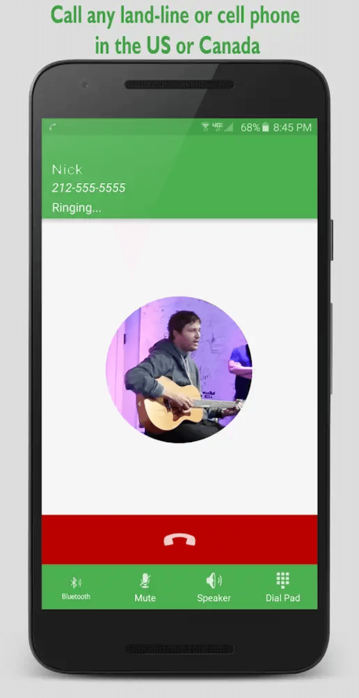
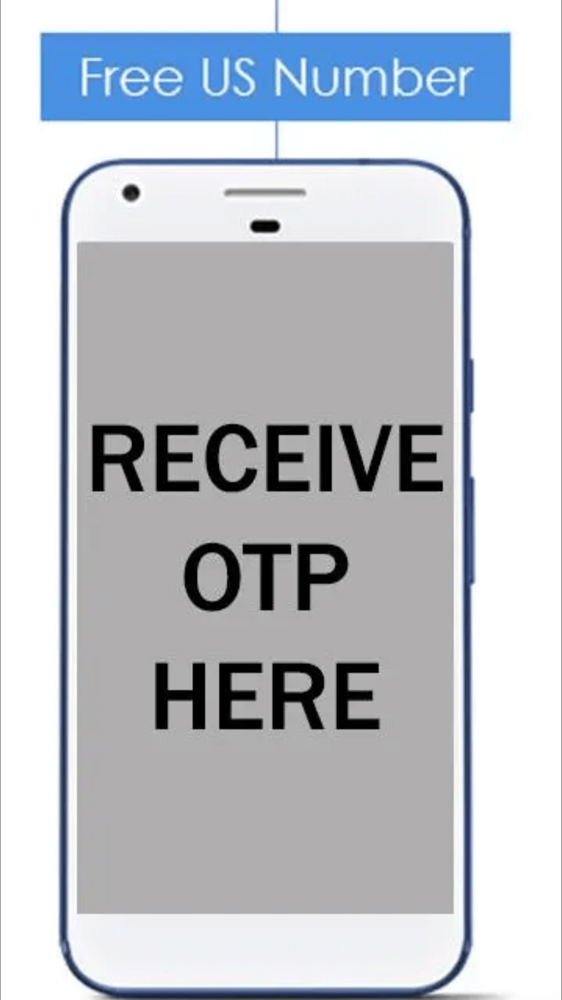
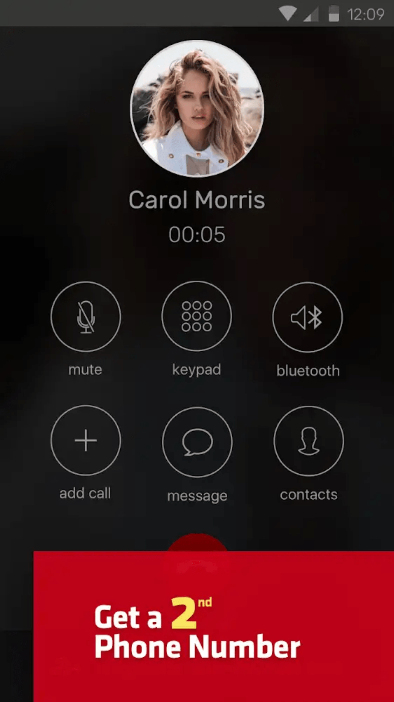
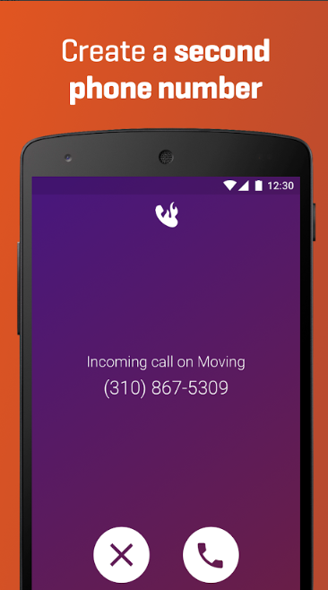

Free Virtual Mobile Number For SMS Verification

Disclaimer: This is just for educational purposes. Do not misuse.
Virtual Phone Numbers
A Virtual Number is a telephone number which is not directly associated with any telephone line. A Virtual Number can be used for verification code or it can also be used for Call Verification. You can also use Virtual Phone Numbers to receive SMS online for Facebook, Twitter, Google, Whatsapp, etc verification. There are many apps and websites which provide Free Virtual Mobile Number For SMS Verification.
Apps which provide Free Virtual Mobile Number For SMS Verification
1. TextNow
TextNow is a free SMS and calling app which provides its users a Local US or Canada Phone Number. This app uses your wifi connection for sending you a verification code. TextNow is an excellent SMS service to receive SMS messages for a verification code. You can download TextNow from here. It is also available in the google play store.
2. 2ndline - Second Phone Number
2ndline is also a free SMS and calling app which lets its user add a second phone line to their smartphones. With this app, you can get any Local US or Canada Phone Number and get your verification code on it. The number this app provides to its users is a Virtual Number. You can download 2ndline from here. It is also available in the google play store.
3. GrooVe IP VoIP Calls and Text
GrooVe IP VoIP Calls and Text gives you a free Virtual Mobile Number for SMS verification. It gives you a US phone number on which you will be able to receive as well as send SMS messages absolutely free. It allows you to forward free SMS in Canada and US. You can download GrooVe IP VoIP Calls and Text from here. It is also available in the google play store.
4. Receive SMS Free - Virtual Mobile Number
Receive SMS Free is an SMS service which gives you free virtual phone numbers of different countries on which you will be able to receive free SMS containing verification code. You don't need to register on this app. This is basically a website in form of an app. Website name is Receive SMS Online. You can download Receive SMS Free from here.
Apps which provide Virtual Phone Numbers on Free Trial
1. Hushed (3-days free trial)
Hushed is an app which gives you the US or Canada Virtual Number for 3 days free trial. It gives you free SMS and call to all numbers registered on hushed. You cannot receive SMS messages on hushed outside US/Canada. You can download Hushed from here.
2. Burner - Free Phone Number (7-days free trial)
Burner is a private phone number app which gives you free virtual phone numbers of US/ Canada for 7 days free trial. A burner number can be easily used as SMS service for free SMS to get verification code within 7 days of free trial. You can download Burner from here.